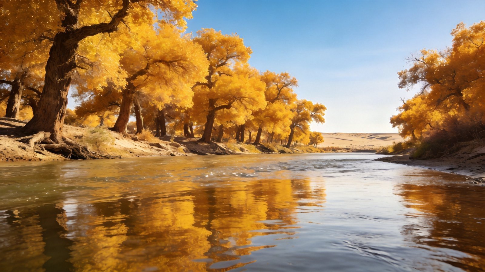
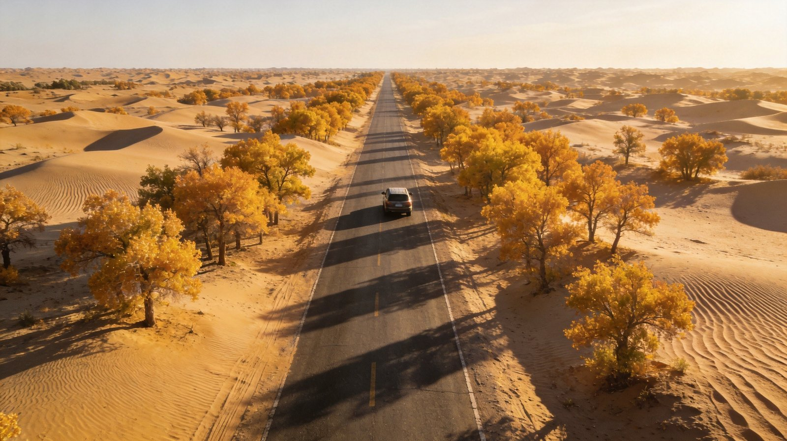
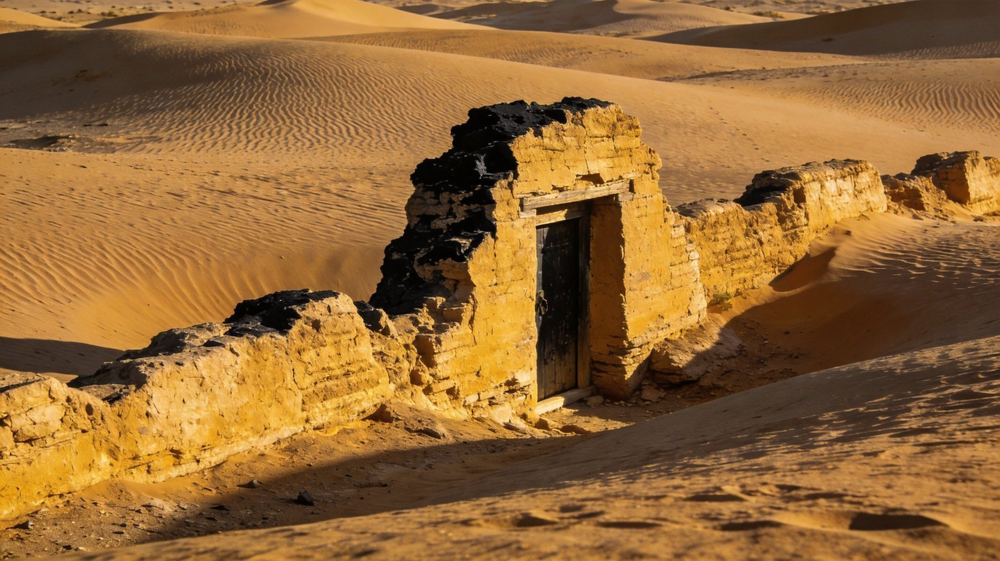
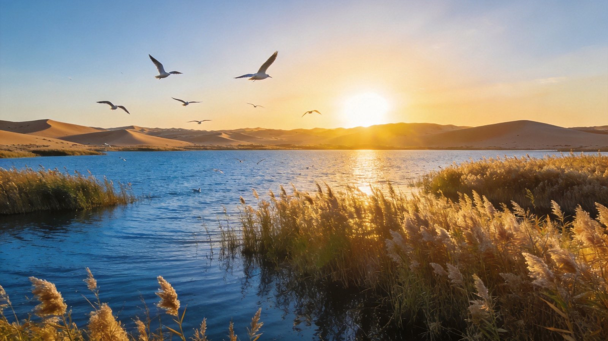

封面
额济纳印象
怎么去
自驾方案
四季景色
胡杨林
黑城怪树林
居延海
热门看点
美食
住宿
行程预算
实用贴士
周边连玩
安全

千年胡杨 · 大漠孤烟 · 一城金秋
额济纳
胡杨林 · 黑城 · 居延海 · 八道桥
胡杨林
黑城遗址
怪树林
居延海
沙漠
中国 · 内蒙古阿拉善盟
A5 口袋手册
· Ejina · 金色走廊
1
/ 15
额济纳
胡杨林 · 黑城 · 居延海 · 沙漠
为什么去额济纳
Ejina · 一片金秋
千年金色胡杨 · 每年只灿烂三周
Golden Populus
🌳 额济纳三看
胡杨林景区
（约240元）：世界仅存三大胡杨林之一，金秋绚烂
黑城·怪树林
：西夏古国遗址与枯杨奇观，大漠孤城
居延海
：沙漠中的碧湖，日出与水鸟绝美
TIP
额济纳的胡杨只在每年 9月底–10月中 染成金黄，是"一年只红三周"的限时景观。
2
/ 15
额济纳
前往方式
怎么去额济纳
How to Get There

大漠公路

黑城遗址
✈ 外部交通三选一
飞机
：银川/西安/北京飞嘉峪关或阿拉善左旗，再转乘大巴
高铁/火车
：乘高铁至嘉峪关/张掖，转大巴约4–5小时进额济纳
自驾
：自银川（约550km）、兰州（约700km）、嘉峪关（约330km）自驾进入
TIP
金秋旺季航班大巴紧张且贵，自驾是最主流且灵活的方式，但大漠路段要充足准备。
3
/ 15
额济纳
自驾方案
自驾路线与提醒
Self-Driving Route
金色公路
怪树林
🛣 经典自驾动线
DAY 1
嘉峪关→额济纳（约330km/5h），宿镇上，晚抵达
DAY 2
胡杨林景区一日：一道桥→八道桥沙漠观日
DAY 3
居延海日出→黑城·怪树林，返程或北上策克口岸
⛽
大漠加油
进出额济纳的长途无加油站，务必满油出发、备好补给
🧭
认路防迷
部分无人区路段无信号，提前下载离线地图、沿主路行驶
TIP
大漠路段一望无际易疲劳，多休整换司机；天黑前务必到镇内，勿夜驾无人区。
4
/ 15
额济纳
一城四季
四季有何不同风景
Four Seasons
秋·金色胡杨

居延海日出
⏳
春（4–5月）
风沙天为主，胡杨冒芽，游客少、性价比高，但体验一般
☀
夏（6–8月）
大漠酷热干燥，白天可达40℃+，胡杨绿意为主，非最佳季
🍁
秋（9月底–10月中）
胡杨金色铺天盖地，一年最佳黄金三周，人山人海、住宿爆满
❄
冬（11–2月）
清冷静寂、胡杨银装素裹，游客稀少，适合小众摄影
TIP
拍金秋胡杨最佳在低角度阳光的清晨与黄昏；务必提前1–2个月订房。
5
/ 15
额济纳
胡杨林线
胡杨林
DAY 1
一道桥·八道桥 · 金色长廊
POPULUS
🍁
一道桥
入口景
📸
二桥四桥
网红树
🏜
八道桥
沙漠日落
金色胡杨 · 一年一度的视觉盛宴
Golden Populus
上午
一道—四道桥
沿河而行，胡杨+倒影最佳，四道桥的"英雄"胡杨最壮观
下午
五—八道桥
渐入沙漠区，八道桥为巴丹吉林沙漠边缘，看日落沙丘
TIP
景区电瓶车方便，早到避开人流；树叶黄透需在9月底10月中，太早太晚都白跑。
6
/ 15
额济纳
西夏遗韵线
黑城怪树林
DAY 2
西夏古城 · 枯杨奇观
RUIN
怪树林 · 枯死的胡杨依旧倔强
Dead Populus
🏛 黑城与怪树林
黑城遗址
：西夏黑水城，元代重镇，大漠中的残垣断壁
怪树林
：成片枯死的千年胡杨，扭曲奇形，夕阳下苍凉震撼
策克口岸
：中蒙边境国门，可眺望蒙古国
TIP
最佳光线在日落，怪树林剪影最出片；风沙大，相机做好防沙。
7
/ 15
额济纳
湖泊日出线
居延海
DAY 3
沙漠碧湖 · 候鸟日出
LAKE
居延海日出 · 沙漠中的生命之泉
Juyan Lake
🌅 居延海看点
日出
：清晨天未亮就出发，霞光洒湖、水鸟齐飞
芦苇荡
：湖畔芦苇连片，微风摇曳如画
候鸟
：天鹅、鸥鸟在春秋迁徙季聚集，观鸟圣地
TIP
日出约在清晨6点前到占位，湖风大需保暖；返程前可在湖心栈道吹晨风。
8
/ 15
额济纳
不可错过
热门看点 TOP 6
Must-See
① 胡杨林景区
一到八道桥，金色胡杨长廊
核心
② 怪树林
枯死千年胡杨，夕阳剪影震撼
奇观
③ 黑城遗址
西夏古国，大漠残垣
人文
④ 居延海
沙漠碧湖，候鸟日出
湖泊
⑤ 八道桥沙漠
巴丹吉林沙丘，日落摄影
沙漠
⑥ 策克口岸
中蒙边境国门，异域风光
边境
TIP
胡杨林+居延海+黑城可串成紧凑3日，建议按傍晚与清晨光线安排摄影点。
9
/ 15
额济纳
地方美食
当地特色味
Local Food
🍈
额济纳蜜瓜
大漠甜瓜，哈密瓜同源，汁多糖高
🥓
烤羊肉·手抓
蒙族牧区大漠风味，膻味小
🥟
蒙古包子
牛羊肉馅，皮薄多汁
🍵
奶茶·奶皮
咸奶茶配奶制品暖胃
🍜
羊杂碎·沙葱
大漠小吃，沙葱凉拌开胃
TIP
金秋游客多，镇区餐馆性价比高于景区；蜜瓜是季节性吃不腻的绝配水果。
10
/ 15
额济纳
住宿
住哪
Where to Stay
额济纳旗达来呼布镇
镇中心，胡杨林/黑城都在周边，餐饮集中
首选
胡杨林景区民宿
就近早起拍日出，但金秋一房难求
景区
沙漠露营
八道桥/巴丹吉林搭帐篷，看星沙漠帐篷
露营
TIP
金秋旺季住宿价格翻数倍且早早售罄，务必提前1–2个月预订；淡季价格亲民。
11
/ 15
额济纳
行程与预算
行程怎么安排
Plan & Budget
2日光影
约 900–1300 元/人
D1
胡杨林景区一整天 → 宿镇
D2
居延海日出 + 黑城怪树林 → 返程
3日深度
约 1300–1700 元/人
D1
胡杨林一到四道桥
D2
五—八道桥 + 沙漠日落
D3
居延海日出 + 黑城 + 策克口岸
交通住宿
500–1500 元
✈
飞嘉峪关/张掖再大巴
🚗
当地包车/租车 400–600/天
🏨
金秋旺季房 400–1000/晚，淡季 150–300
TIP
金秋是整个行程开支最高的时节，机票住宿提前2个月订最划算。
12
/ 15
额济纳
实用贴士
来之前要知道
Good to Know
🧣
防晒防风沙
紫外线强、风沙大，备墨镜口罩防晒霜纱巾
⏰
最佳观赏期
胡杨黄透通常 9月25日–10月15日，务必查实时叶况
🐪
尊重生态
大漠生态脆弱，勿碾压草场、勿采挖胡杨，垃圾带走
💳
现金备少量
部分野景区信号弱、移动支付不便，备现金零钱
TIP
进大漠前提前加满油、备水与食物，手机充满电并下载离线地图。
13
/ 15
额济纳
周边连玩
周边线路
Around
🗺 串联玩法
南下
张掖七彩丹霞
：五彩山峦，河西走廊名景
西行
嘉峪关
：天下第一雄关，关城壮美
东连
阿拉善左旗·腾格里沙漠
：沙漠与胡杨大环线
TIP
推荐「额济纳 + 张掖丹霞 + 嘉峪关」国庆西北大环线，金秋一步一景。
14
/ 15
额济纳
安全提示
重点危险与防范
Stay Safe
☀
高温暴晒
夏季大漠可超40℃，防晒补水防中暑，避免正午户外
🏜
沙漠迷路
勿私自深入无人区，跟随景区线路，保持与队友/车辆可见
⛽
断油被困
进出大漠路段加油站极少，务必满油+备油桶，防困途中
🌫
沙尘暴
春季风沙大，遇沙尘暴就近找掩体，勿行车硬闯
🧊
昼夜温差
大漠昼夜温差可达20℃+，早晚保暖防失温
额济纳·金色走廊 愿你在胡杨林遇见一整个秋天 🍂
15
/ 15
Insta360
记录美好
记录美好生活
相机指南 · CAMERA GUIDE